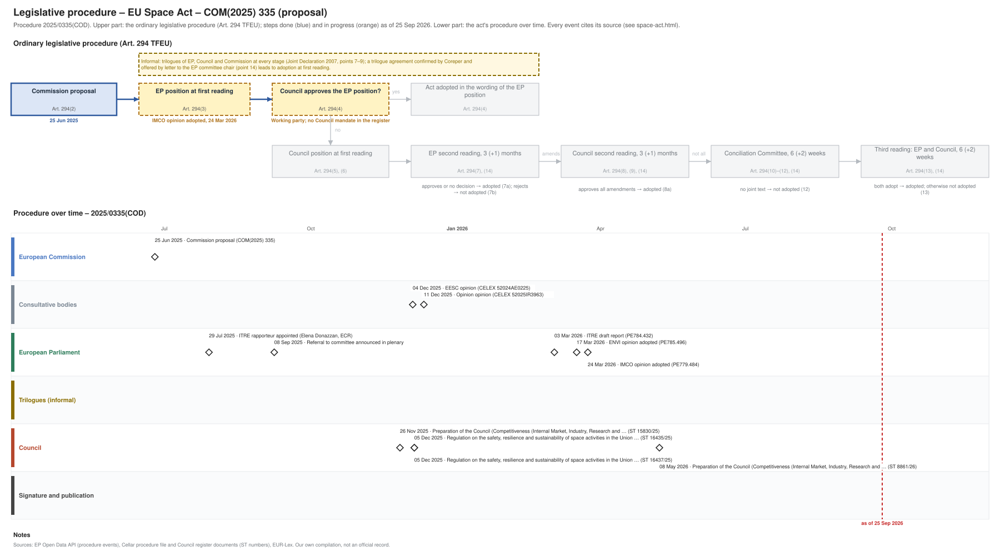

← All procedures · Regulation timeline
Procedure 2025/0335(COD), ongoing, as of 26 Sep 2026. Drawing: SVG · PNG · PDF (A3) · draw.io · Page as Markdown: space-act.md
| Stage | EP committee stage |
|---|---|
| Parliament | draft report 03 Mar 2026 |
| Council | working party, latest document 08 May 2026 |
| Latest activity | 08 May 2026 · Council: Preparation of the Council (Competitiveness (Internal Market, Industry, Research and … (ST 8861/26) |
| Next steps | EP: amendments and committee vote on the report and mandate; Council: working party towards a negotiating mandate |

| Date | Actor | Event | Document | Source |
|---|---|---|---|---|
| 2025-06-25 | European Commission | Commission proposal (Art. 294(2) TFEU) | COM(2025) 335 | Cellar (CELEX 52025PC0335) |
| 2025-07-29 | European Parliament | ITRE rapporteur appointed (Elena Donazzan, ECR) | EP Open Data API, procedure 2025-0335 (participation RAPPORTEUR) | |
| 2025-09-08 | European Parliament | Referral to committee announced in plenary | EP Open Data API, procedure 2025-0335 (REFERRAL) | |
| 2025-11-26 | Council | Preparation of the Council (Competitiveness (Internal Market, Industry, Research and … | ST 15830/25 | Cellar procedure file 2025/335 (Council register) |
| 2025-12-04 | Consultative bodies | EESC opinion | CELEX 52024AE0225 | Cellar procedure file 2025/335 |
| 2025-12-05 | Council | Regulation on the safety, resilience and sustainability of space activities in the Union … | ST 16435/25 | Cellar procedure file 2025/335 (Council register) |
| 2025-12-05 | Council | Regulation on the safety, resilience and sustainability of space activities in the Union … | ST 16437/25 | Cellar procedure file 2025/335 (Council register) |
| 2025-12-11 | Consultative bodies | Opinion opinion | CELEX 52025IR3963 | Cellar procedure file 2025/335 |
| 2026-03-03 | European Parliament | ITRE draft report | PE784.432 | EP Open Data API, procedure 2025-0335 (COMMITTEE_TABLING_REPORT) |
| 2026-03-17 | European Parliament | ENVI opinion adopted | PE785.496 | EP Open Data API, procedure 2025-0335 (COMMITTEE_ADOPTING_OPINION) |
| 2026-03-24 | European Parliament | IMCO opinion adopted | PE779.484 | EP Open Data API, procedure 2025-0335 (COMMITTEE_ADOPTING_OPINION) |
| 2026-05-08 | Council | Preparation of the Council (Competitiveness (Internal Market, Industry, Research and … | ST 8861/26 | Cellar procedure file 2025/335 (Council register) |
| Date | Document | Kind | Subject |
|---|---|---|---|
| 2025-06-26 | ST 10935/25 | council-transmission | Proposal for a REGULATION OF THE EUROPEAN PARLIAMENT AND OF THE COUNCIL on the safety, resilience and sustainability of space activities in the Union |
| 2025-06-26 | ST 10935/25 ADD 1 | council-transmission | ANNEXES to the Proposal for a REGULATION OF THE EUROPEAN PARLIAMENT AND OF THE COUNCIL on the safety, resilience and sustainability of space activities in the … |
| 2025-06-26 | ST 10935/25 ADD 2 | council-transmission | Opinion of the board |
| 2025-06-26 | ST 10935/25 ADD 3 | council-transmission | COMMISSION STAFF WORKING DOCUMENT IMPACT ASSESSMENT REPORT Accompanying the document Proposal for a Regulation of the European Parliament and of the Council on … |
| 2025-06-26 | ST 10935/25 ADD 4 | council-transmission | COMMISSION STAFF WORKING DOCUMENT IMPACT ASSESSMENT REPORT Accompanying the document Proposal for a Regulation of the European Parliament and of the Council on … |
| 2025-06-26 | ST 10935/25 ADD 5 | council-transmission | COMMISSION STAFF WORKING DOCUMENT EXECUTIVE SUMMARY OF THE IMPACT ASSESSMENT REPORT Accompanying the document Proposal for a Regulation of the European … |
| 2025-11-26 | ST 15830/25 | council-progress-report | Preparation of the Council (Competitiveness (Internal Market, Industry, Research and Space)) on 8-9 December 2025 Regulation on the safety, resilience and … |
| 2025-11-26 | ST 15867/25 | council-note | Preparation of the Council (Competitiveness (Internal Market, Industry, Research and Space)) on 8-9 December 2025 Regulation on the safety, resilience and … |
| 2025-12-04 | CELEX 52024AE0225 | opinion | Opinion of the European Economic and Social Committee – Proposal for a Regulation of the European Parliament and of the Council on the safety, resilience and … |
| 2025-12-05 | ST 16435/25 | council-compromise | Regulation on the safety, resilience and sustainability of space activities in the Union (EU Space Act) - Presidency compromise text |
| 2025-12-05 | ST 16437/25 | council-compromise | Regulation on the safety, resilience and sustainability of space activities in the Union (EU Space Act) - Presidency compromise text - clean version |
| 2025-12-05 | WK 16590/25 | council-note | EU Space Act: MS comments on articles (deadline 7/10/2025) |
| 2025-12-05 | WK 16591/25 | council-note | EU Space Act: MS comments on Titles I, IV (chapt. II-VI), V, VI and Annexes VII and VIII (deadline 24/10/2025) |
| 2025-12-05 | WK 16592/25 | council-note | EU Space Act: MS comments on Title II (art. 10+15), IV (chapt.I: art. 58-74), VII (art. 113-119) and Annexes I-VI, IX and X (deadline 14/11/2025) |
| 2025-12-05 | WK 16852/25 | council-note | EU Space Act - Correspondence table for articles and recitals |
| 2025-12-11 | CELEX 52025IR3963 | opinion | Urgent opinion of the European Committee of the Regions – EU Space Act |
| 2026-03-03 | PE784.432 | ep-draft-report | DRAFT REPORT on the proposal for a regulation of the European Parliament and of the Council on the safety, resilience and sustainability of space activities in … |
| 2026-03-19 | PE785.496 | ep-opinion | OPINION on the proposal for a regulation of the European Parliament and of the Council on the safety, resilience and sustainability of space activities in the … |
| 2026-04-21 | PE779.484 | ep-opinion | OPINION on the proposal for a regulation of the European Parliament and of the Council on the safety, resilience and sustainability of space activities in the … |
| 2026-05-08 | ST 8861/26 | council-progress-report | Preparation of the Council (Competitiveness (Internal Market, Industry, Research and Space)) on 28-29 May 2026 Regulation on the safety, resilience and … |
{kind=link}
{kind=link}